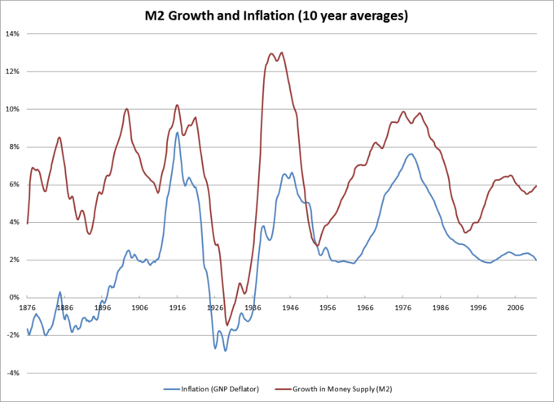

Discretionary policies refer to subjective actions taken in response to changes in the economy.
Contrast discretionary and rules-based monetary policy.
Discretionary policies refer to actions taken in response to changes in the economy, but they do not follow a strict set of rules; instead, they use subjective judgment to treat each situation in a unique manner. For much of the 20th century, governments adopted discretionary policies to correct the business cycle. These typically used fiscal and monetary policy to adjust inflation, output, and unemployment. However, following the stagflation of the 1970s, policymakers were attracted to policy rules.
A discretionary policy is supported because it allows policymakers to respond quickly to events. However, discretionary policy can be subject to dynamic inconsistency: a government may say it intends to raise interest rates indefinitely to bring inflation under control, but then relax its stance later. This could make the policy noncredible and ultimately ineffective.
A rule-based policy can be more credible, because it is more transparent and easier to anticipate, unlike discretionary policy. Policy is implemented based on indicator events in the economy and the policy is expected and carried out in a timely manner. Further, as commented by Milton Friedman who argued in favor of a rules-based approach, the dynamics of discretionary policy present a lag between observation and implementation. This can create compounding issues related to the discretionary policy enacted. However, a strict rules-based approach does not allow for flexibility and as a result may limit choices or be inapplicable in certain circumstances.
Milton Friedman was a Nobel Prize (1976) recipient in the field of Economics and was a supporter of rules-based monetary policy.
A compromise between strict discretionary and strict rule-based policy is to grant discretionary power to an independent body. For instance, the Federal Reserve Bank, European Central Bank, Bank of England, and Reserve Bank of Australia all set interest rates without government interference, but do not adopt a strict rules-based policy stance. In this case the central banking authorities have autonomy and are able to use monetary policy to enable their mandate of economic growth and full employment. The policies they enact cannot be destabilized by government fiscal policy.
Expansionary monetary policy is traditionally used to try to combat unemployment in a recession by lowering interest rates.
Assess the value of discretionary expansionary monetary policy and the associated shortcomings.
Expansionary monetary policy is traditionally used to try to combat unemployment in a recession by lowering interest rates in the hope that easy credit will entice businesses into investing, leading to overall economic growth. Monetary policy, to a great extent, is the management of expectations between interest rates, the price of the use of money, and the total supply of money. Monetary policy uses a variety of discretionary tools to control one or both of these to influence outcomes like economic growth, inflation, exchange rates with other currencies, and unemployment. When the central bank is in complete control of the money supply, the monetary authority has the ability to alter the money supply and influence the interest rate to achieve policy goals .
The increase in the money supply is the primary conduit for expansionary monetary policy.
However, the success of monetary policy intervention rests on the credibility of the central bank on one hand and the understanding of central bank operations related to interest rates and money supply effects on the part of the public, in general. For example, if the central bank is implementing expansionary policy but is committed to keeping interest rates low, the central bank needs to convey this policy with credibility, otherwise economic agents may assume that expansionary policy will lead to inflation and begin augmenting behavior to initiate the outcome expected, higher inflation.
Announcements can be made credible in various ways. One is to establish an independent central bank with low inflation targets (but no output targets). Hence, private agents know that inflation will be low because it is set by an independent body.
Expansionary fiscal policies, which are usually implemented during recessions, attempt to increase economic demand.
Evaluate the pros and cons of fiscal policy intervention during recession
Fiscal policy is a broad term, describing the policies enacted around government revenue and expenditure in order to influence the economy. Governments can increase their revenue by increasing taxes, or increase their expenditure by spending money on programs.
Expansionary fiscal policies are usually implemented during recessions because they attempt to increase economic demand, and as a result, increase economic output which is reduced during a recession. Expansionary fiscal policies involve reducing taxes or increasing government expenditure.
Remember that government revenue is based on collected taxes. When taxes exceed government spending, the government is characterized as having a surplus. When taxes equal government expenditures, the government has a balanced budget. When the government spends more than the revenue it collects, it has a deficit. Increasing government spending, creating a budget deficit, and financing the shortfall through debt issuance are typical policy actions in an expansionary fiscal policy scenario.
Due to the funding process of expansionary policy, there is a lack of consensus among economists with respect to the merits of fiscal stimulus. The discord mostly centers on crowding out, defined as government borrowing leading to higher interest rates that in turn may offset the stimulative impact of government spending. When the government runs a budget deficit, funds will need to come from public or foreign borrowing. As a result, the government issues bonds. This raises interest rates across the economy because government borrowing increases demand for credit in the financial markets. This may in turn reduce aggregate demand for goods and services, which defeats the purpose of a fiscal stimulus.
Fiscal stimulus is implemented with the view that tax relief through a reduction in tax rate and or direct government spending through investment (infrastructure, repair, construction) will provide stimulus to increase economic growth by directly influencing consumption or the government expenditure component of GDP .
Taxes have not only been a way to initiate fiscal policy intervention, but have also been used to solidify popular approval. In the picture above former President George W. Bush is signing into effect the Tax Relief Reconciliation Act of 2001.
Inflation targeting often succeeds in controlling inflation and anchoring expectations, but may limit a central bank's flexibility.
Argue that central banks should maintain inflation targets, Argue that central banks should not maintain inflation targets
Inflation targeting is an economic policy in which a central bank publicly determines a target inflation rate and then attempts to steer actual inflation towards the target. For example, in the United States, the Federal Reserve implicitly maintains a target inflation range of 1.7%-2.0%. When inflation falls below this range, the Fed would lower interest rates and raising the money supply in order to push inflation up. Likewise, when inflation rises above the target range, the Fed would raise interest rates and decrease the money supply in order to suppress the high level of inflation . While the inflation rate and the interest rate generally have an inverse relationship, these tools are not always successful in affecting inflation - for example, in response to the 2008 financial crisis and ensuing recession, the Fed raised its target inflation level to 2% and lowered interest rates to nearly zero. This did not, however, succeed in raising inflation to 2%.
The relationship between the money supply and the inflation rate is not exact, but it suggests that a central bank can often affect inflation by adjusting the money supply through higher or lower interest rates.
Proponents of inflation targeting argue that a volatile inflation rate has negative effects for an economy. High levels of inflation eat away at savings, increase menu costs and shoe-leather costs, discourage lending, and may create an inflationary spiral that leads to hyperinflation. Inflation targeting has been successful in keeping inflation levels low and avoiding many of these negative effects.
Further, inflation targeting is a transparent way to explain interest rate policy and to anchor consumers' expectations about future inflation. When the central bank announces an inflation target of 2%, the public knows that if inflation goes too far above or below that level, the central bank will take action. This certainty stimulates economic activity. Further, the public's expectations about inflation tend to be a self-fulfilling prophecy. When consumers expect high inflation they spend their money immediately, attempting to avoid higher future prices. This increase in demand leads to higher prices, causing more inflation. Likewise, when consumers expect deflation they tend to save their money, delaying consumption until prices fall. This decrease in demand causes producers to sell their goods at lower prices, and the cycle continues. Inflation targeting sets consumers' expectations, making a certain inflation level easier to maintain.
On the other hand, some argue that the costs of inflation targeting exceed the benefits. If the rule is implemented very strictly, an inflation target could severely limit the central bank's flexibility in responding to changing economic conditions. During a recession, for example, central banks shouldn't raise the interest rate even if inflation is above the target level. Further, sometimes higher inflation is a good thing because it stimulates spending. A central bank with a strict inflation targeting rule, however, would not allow that higher inflation rate even if it were otherwise beneficial.
Others argue that, since inflation isn't necessarily coupled to any factor internal to a country's economy, inflation isn't the best variable to target. Adherents of market monetarism, for example, argue that targeting a nominal national income (nominal GDP) would be more effective than targeting inflation. Others suggest targeting long-run inflation, which takes the exchange rate into account, rather than the short-term inflation rate.
{kind=link}